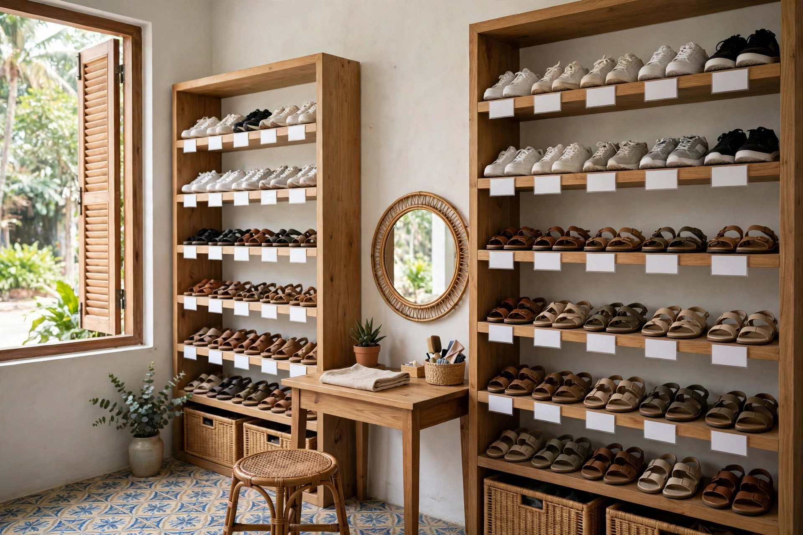

Website cho shop giày dép cần có gì: chọn đúng size, xem ảnh thật, đổi size không mất công
Khách cầm hai chiếc giày thể thao, so sánh trước khi chọn — khoảnh khắc mua sắm quen thuộc của khách mua giày dép, và là lý do website shop giày dép phải cho đối chiếu size theo số đo chân và lọc đúng đôi còn size ngay trên trang.
Tám giờ tối, khách nhắn vào fanpage shop bạn: "Shop ơi giày này size 39 chân em dài 24cm đi vừa không ạ, có màu đen không ạ, ship về Lào Cai mất mấy hôm ạ?" Bạn đang dở tay đóng gói đơn buổi tối, trả lời sau nửa tiếng thì tin nhắn đã trôi xuống dưới, khách thì đã lướt sang shop khác — ở đó, khách tự đo chân theo bảng size, tự lọc ra đúng đôi còn size 39 màu đen, và đặt xong đơn trong lúc chờ bạn trả lời. Sáng hôm sau bạn mới nhắn lại: "Dạ vừa ạ, shop còn hàng ạ" — nhưng khách không còn nhớ mình định mua đôi nào nữa, đơn hàng thì chưa bao giờ được đặt.
Chủ shop giày dép nào cũng quen cảnh này — không phải vì khách không muốn mua, mà vì shop bắt một người đang phân vân về size chân của mình phải nhắn tin, chờ đợi rồi mới mua được. Ngay dưới đây, mình sẽ cùng bạn bóc tách vì sao cách làm hiện tại của phần lớn shop giày dép đang làm mất đơn, những mục một website cho shop giày dép thực sự cần có, và cách bạn tự kiểm tra trước khi bỏ tiền làm web.
Vì sao shop giày dép đông khách vẫn mất đơn: ba lỗi quen thuộc
Lỗi thứ nhất là size giày mỗi hãng mỗi khác, khách không dám chốt. Cùng một số 39, hãng này form ôm, hãng kia form rộng hơn nửa size; giày chạy bộ cần chừa mũi nhiều hơn giày đi làm; chân bè đi size theo bảng chuẩn lại chật ngang. Vậy mà trên fanpage hay trang bán hàng của nhiều shop chỉ ghi size 36–43 chung chung, không có bảng quy đổi theo từng hãng, không hướng dẫn đo chân. Khách không biết chân dài 24cm của mình đi size nào, lại phải nhắn hỏi, mà nhắn hỏi thì phải chờ. Với giày dép, một câu hỏi về size không được trả lời kịp là một đơn hàng mất luôn, vì khách không dám mua một đôi giày mà mình không chắc có đi vừa không.
Lỗi thứ hai là không xem được ảnh thật và chất liệu thật của đôi giày. Giày dép là thứ khách mang lên chân cả ngày: da thật hay giả da, đế cao su hay đế nhựa cứng, lót trong có êm không, đôi giày nặng bao nhiêu — những thứ này ảnh chụp một góc trên fanpage không nói được. Khách nhìn ảnh lung linh mà không biết đế có trơn không, da có cứng và đau chân không, mua về mang một buổi đã muốn đổi. Khi web không cho khách xem đủ góc, không ghi rõ chất liệu và cân nặng từng đôi, shop vừa mất đơn của người cẩn thận, vừa mất tiền đổi trả vì khách nhận hàng thấy khác xa ảnh.
Lỗi thứ ba là đổi size rắc rối, phải nhắn tin xin đổi từng lần. Mua giày online, chuyện đi chật nửa size hay rộng nửa size là bình thường — khách chấp nhận rủi ro đó với điều kiện đổi lại dễ. Nhưng nhiều shop không ghi rõ chính sách đổi size ở đâu, khách phải nhắn tin hỏi "đổi size thì làm sao ạ", chờ shop trả lời, chờ shop gửi địa chỉ gửi trả, chờ shop gửi lại đôi mới — cả tuần chưa xong. Một quy trình đổi size bắt khách phải nhắn tin từng bước là một quy trình được thiết kế cho người rảnh — mà khách mua giày thì không rảnh, họ cần đôi vừa chân để mang đi làm ngay tuần sau, không phải để chờ đổi qua đổi lại.
7 mục một website shop giày dép thực sự cần có
Một website cho shop giày dép không cần nhiều trang, càng không cần hiệu ứng cầu kỳ. Nó cần đúng những mục dưới đây — mỗi mục giải quyết một câu hỏi cụ thể mà khách luôn hỏi trước khi bấm đặt hàng.
1. Bảng size theo số đo chân — khách đo chân một lần là chọn đúng size mọi hãng
Đây là mục quan trọng nhất với shop giày dép, vì khách mua giày không mua theo số size mà mua theo độ dài bàn chân của mình: chân dài bao nhiêu cm, chân bè hay chân thon, hãng này form ôm hay form rộng. Bảng size phải nằm ngay dưới mỗi sản phẩm, khách không phải nhắn hỏi: hướng dẫn đo chân bằng cách đặt chân lên tờ giấy, đo từ gót tới đầu ngón dài nhất, cộng thêm khoảng 0,5–1 cm để chừa chỗ cho ngón chân; rồi đối chiếu sang bảng quy đổi của đúng hãng giày đó — vì cùng số 39 mà mỗi hãng chênh nhau có thể tới nửa size. Ghi thêm một dòng ghi chú cho từng mẫu: "form ôm, chân bè nên lấy tăng một size" hay "form rộng, đi đúng size đo được" — dòng này vừa giúp khách an tâm, vừa giúp shop giảm hẳn đơn đổi trả vì đi chật. Bảng này cũng là thứ giúp bạn giảm hẳn tin nhắn "chân em 24cm đi size mấy ạ" — vì khách tự đo được trong một phút, lúc nửa đêm, không cần chờ bạn trả lời.
2. Bộ lọc theo loại giày và size còn hàng — hết size thì ẩn nút mua, không để khách đặt rồi mới báo hết
Khách vào web của bạn thường đã biết mình cần loại giày nào, nên web phải cho họ chọn loại giày trước rồi mới hiện sản phẩm: giày thể thao, giày chạy bộ, giày đi làm, sandal, dép lê — chọn xong, toàn bộ đôi hiện ra đều là hàng phù hợp với nhu cầu đó, kèm đúng size còn hàng của từng mẫu. Một bộ lọc làm đúng sẽ loại bỏ gần như toàn bộ lỗi đặt rồi mới báo hết hàng: size nào hết thì hiện rõ "hết size 39", không cho khách bấm đặt rồi hôm sau mới nhắn "shop hết size này ạ"; đồng thời gợi ý ngay size gần nhất còn hàng hoặc mẫu tương tự còn đủ size. Bộ lọc càng nằm gần đầu trang càng tốt, ngay dưới thanh tìm kiếm, để khách chạm hai lần là tới đúng kệ giày còn size của mình.
3. Ảnh thật nhiều góc và thông tin dùng thật — chất liệu, đế, lót trong, cân nặng đôi giày
Mỗi đôi giày cần ảnh chụp thật của chính đôi bạn bán: mặt trước, mặt bên, mặt sau, cận chất liệu da hoặc vải, cận đế và cận lót trong. Kèm theo đó là thông tin ngắn gọn mà đủ ý: chất liệu thân giày là gì, đế cao su hay đế nhựa, lót trong có êm không, đôi giày nặng bao nhiêu, đi mưa có trơn không, bảo quản thế nào sau khi giặt. Với giày dép, khách đọc một lượt là hình dung được đôi giày mang lên chân sẽ như thế nào, và đó chính là thứ khiến họ bấm đặt hàng thay vì nhắn hỏi thêm. Ảnh thật kèm thông tin thật còn có một tác dụng khác: khi hàng giao tới tay giống hệt những gì web đã ghi, khách tin shop, và lần sau họ cần đôi mới cũng quay lại chỗ bạn.
4. Giỏ hàng và đặt hàng COD — khách đặt xong trong 3 lần chạm
Khách mua giày dép thường mua trong những khoảng thời gian vụn vặt: lúc chờ xe, lúc giải lao, lúc đôi giày cũ vừa đứt đế. Quy trình đặt hàng vì vậy phải ngắn nhất có thể: chọn đúng đôi còn size của mình, bấm "đặt hàng", điền tên, số điện thoại và địa chỉ là xong — ba lần chạm, không cần tạo tài khoản, không cần chuyển khoản trước. Khách nhận hàng mới trả tiền (COD) đúng thói quen mua bán quen thuộc, không phải lăn tăn chuyển khoản cho một shop lạ vì một đôi giày vài trăm nghìn. Form đặt hàng càng ít ô càng tốt: bỏ bớt những trường không cần thiết, để lại đúng những gì bạn cần để giao hàng. Một đơn giày dép được đặt xong trong lúc khách còn đang rảnh tay là một đơn hàng bạn đã giữ được.
5. Combo theo nhu cầu — mua một lần là đủ bộ dùng ngay, khỏi chọn lẻ từng món
Khách mua giày thường cần thêm vài món đi kèm mà họ không nghĩ tới lúc chọn giày: tất thấm hút cho giày thể thao, chai xịt vệ sinh và bàn chải cho giày da, lót giày êm cho người phải đứng cả ngày. Mục combo giải quyết đúng nhu cầu đó: combo chạy bộ gồm giày chạy + tất thể thao + chai vệ sinh giày trong một gói; combo đi làm gồm giày da + lót êm + xi đánh giày trong một gói. Ghi rõ trong mỗi combo gồm những gì, dùng cho nhu cầu nào, tổng giá bao nhiêu và tiết kiệm hơn mua lẻ bao nhiêu — khách nhìn một bảng là quyết định được ngay, không cần nhắn hỏi "mua giày này thì cần thêm gì nữa ạ". Bạn cũng bán được nhiều món hơn trong một đơn, mà khách thì nhận bộ về là dùng được ngay, không phải chạy đi mua thêm.
6. Đổi size ghi rõ ngay trang sản phẩm — đổi trong mấy ngày, ai chịu phí ship, điều kiện ra sao
Giày dép là mặt hàng khách lo nhất về chuyện đi không vừa sau khi mua, nên chính sách đổi size phải nằm ngay dưới nút đặt hàng, không giấu trong một trang riêng khó tìm: đi chật hay rộng nửa size thì đổi trong bao nhiêu ngày; phí ship đổi size ai chịu; giày đã mang ra ngoài thì đổi theo điều kiện nào; đổi sang size khác hay đổi sang mẫu khác thì làm thế nào. Ghi rõ điều kiện ngay từ đầu — giày chưa mang ra ngoài, còn nguyên hộp thì đổi theo điều kiện nào, giày đã mang thử trong nhà thì sao — để khách không phải hỏi lại và bạn không phải giải thích lại từng người. Một chính sách đổi size rõ ràng làm được điều mà ảnh đẹp không làm được: khiến khách dám bấm mua ngay cả khi họ chưa từng mua ở shop bạn bao giờ, vì họ biết nếu giày không vừa chân thì vẫn có đường quay lại.
7. Đánh giá của khách đã mua — ghi rõ size chân nào, mua size mấy, đi vừa hay chật
Với shop giày dép, đánh giá có giá trị nhất không phải là "shop uy tín lắm ạ" mà là những dòng ghi rõ thông tin thật: "chân mình dài 24cm, chân bè, mua size 39 đi vừa, form hơi ôm", "chân 25cm mua size 40 đi làm cả ngày không đau chân", "mua tặng chồng size 42, chồng mình chân thon đi vừa in". Mục này cần tên thật của khách, số đo chân của khách, size đã mua và cảm nhận vừa hay chật, rộng — kèm được ảnh thật đôi giày khách đang mang thì càng tốt, với sự đồng ý của khách. Năm đến bảy đánh giá như vậy, đặt ngay dưới bảng size, có tác dụng hơn cả một trang giới thiệu dài: khách đang phân vân size của mình sẽ đối chiếu chân của mình với chân trong đánh giá và tự tin bấm mua, thay vì nhắn hỏi bạn rồi chờ trả lời.
👉 Xem thư viện mẫu web theo ngành nghề tại Web Khởi Nguồn
Kệ giày xếp theo từng size, thẻ size trống để ghi số size — cách trưng bày này trên website giúp khách chọn đúng đôi còn size của mình ngay lần đầu.
Khách mua cho mình và khách mua tặng người khác dùng website của shop theo hai cách hoàn toàn khác nhau
Khách mua cho mình — người đã biết chân mình dài bao nhiêu, đi size nào — vào web của bạn với mục đích rất thực dụng: đối chiếu bảng size, thấy còn size của mình, thấy giá, đặt xong trong một phút rồi tắt đi. Với nhóm này, bảng size theo số đo chân, bộ lọc theo size còn hàng, giá ghi rõ và giỏ hàng đặt nhanh là quan trọng nhất; họ không cần đọc dài, không cần tư vấn nhiều, và cũng là nhóm quay lại thường xuyên nhất — mỗi lần đôi giày cũ mòn đế là một lần họ mở lại web của bạn.
Khách mua tặng người khác — người mua giày cho chồng, cho con, cho bố mẹ mà không biết chính xác size chân người nhận — lại vào web với tâm thế dò xét. Họ đọc kỹ hướng dẫn đo chân, soi chính sách đổi size và đọc đánh giá của người cùng số đo chân trước khi quyết định. Với nhóm này, hướng dẫn đo chân dễ làm theo, bảng size theo từng hãng, chính sách đổi size rõ ràng và đánh giá ghi rõ số đo chân là bốn thứ quan trọng nhất; thiếu một trong bốn, họ sẽ sang shop khác. Hiểu hai hành vi này, bạn sẽ biết vì sao website shop giày dép phải vừa có đủ bảng size, bộ lọc size còn hàng, đổi size rõ ràng cho khách mua tặng, vừa có đối chiếu size nhanh và đặt hàng nhanh cho khách mua cho mình — thiếu một phía là mất một nửa cơ hội.
Gói website trọn gói 586.000đ tại Web Khởi Nguồn gồm những gì cho shop giày dép?
Nghe giá 586.000đ, nhiều chủ shop nghi ngờ ngay: rẻ vậy thì web làm ra chắc chỉ để "cho có", được vài hôm lại lỗi. Nghi ngờ đó có cơ sở nếu giá rẻ đến từ việc cắt xén tính năng. Còn ở đây, giá thấp đến từ cách làm: shop nhỏ chỉ cần 1 đến 5 trang đúng nhu cầu, cấu trúc trang cho cửa hàng bán hàng đã được đóng gói thành quy trình chuẩn, đội ngũ không phải ngồi lập trình lại từ con số không cho từng khách, nên chi phí dồn vào đúng phần nội dung và giao diện riêng của shop bạn. Bạn có thể xem chi tiết tại bảng giá và mục gói 586.000đ gồm những gì trên trang chủ.
Cụ thể với một shop giày dép, gói bàn giao gồm: website 1–5 trang theo yêu cầu (trang giới thiệu shop, trang sản phẩm với bảng size theo số đo chân và bộ lọc theo size còn hàng, trang combo theo nhu cầu, trang liên hệ — bố cục theo đúng ngành giày dép và màu sắc thương hiệu của shop); chuẩn mobile tuyệt đối vì phần lớn khách xem bằng điện thoại; tên miền năm đầu, hosting và chứng chỉ bảo mật SSL đã gồm sẵn trong giá; giỏ hàng và đặt hàng COD để khách đặt xong trong vài lần chạm, nhận hàng mới trả tiền; form liên hệ và form đặt hàng thu thông tin khách; cụm nút gọi — Zalo — bản đồ nổi một chạm để khách hỏi nhanh "đôi này còn size 39 không" và tìm đường tới shop. Web dựng xong trong 1–3 ngày, kèm hướng dẫn sử dụng chi tiết từ A–Z để bạn tự thêm mẫu giày mới, tự sửa giá theo size, đăng mẫu mới mỗi tuần mà không cần biết kỹ thuật, và bảo hành kỹ thuật trọn đời. Chính sách làm thử trước, hài lòng mới thanh toán, không cần đặt cọc — bạn xem trước bản dựng của chính shop mình rồi mới quyết định. Khi shop mở thêm chi nhánh hay cần bán hàng bài bản hơn, bạn có thể nâng cấp lên gói website cao cấp mà không phải làm lại từ đầu.
Cách tự kiểm tra một website shop giày dép trước khi quyết định làm
Dù bạn làm web ở đâu, hãy tự kiểm tra bằng trải nghiệm của chính khách hàng, với bốn bước đơn giản sau. Bước một: lấy điện thoại của bạn, bật 4G, đóng vai một khách chân dài 24cm đang cần mua giày thể thao size 39. Đếm số lần chạm từ lúc trang mở tới lúc bạn đặt xong đơn — nếu phải qua quá 4 đến 5 lần chạm, hoặc phải nhắn tin hỏi size và hỏi còn hàng thì mới mua được, trang đó đang làm mất đơn mỗi ngày. Bước hai: thử đối chiếu bảng size — tìm một đôi giày, xem bảng quy đổi theo hãng có ghi rõ chân 24cm đi size nào không, và bộ lọc theo size còn hàng có chỉ hiện đôi còn size bạn cần không. Bước ba: thử tự thêm một mẫu giày mới và sửa giá một size, xem thao tác mất bao lâu; nếu phải nhắn nhờ người khác làm hộ, về lâu dài giá trên web sẽ lại thành giá cũ, và bạn quay về đúng lỗi thứ nhất ở đầu bài. Bước bốn: bấm thử nút gọi và nút Zalo ngay trên trang, xem có ra đúng số của shop không; gửi thử một đơn hàng qua giỏ hàng COD, xem thông tin có tới tay bạn đầy đủ tên, số điện thoại, địa chỉ, mẫu giày và đúng size khách đã chọn không; mở lại trang bằng 4G vào đúng giờ cao điểm tối, mạng yếu, xem trang và ảnh giày có hiện nhanh không — khách của bạn cũng đang mở trang trong đúng điều kiện như vậy, thường là lúc họ vừa cần mua gấp một đôi giày.
Quay lại cảnh tám giờ tối ở đầu bài: bạn không thể làm khách ngừng phân vân về size chân của mình, nhưng bạn có thể khiến một người đang cần một đôi giày đo được chân, đối chiếu đúng size theo hãng và đặt xong đơn trong vài lần chạm, không cần chờ ai báo size. Bảng size theo số đo chân, lọc đúng đôi còn size, đơn hàng tự đặt được và nhận hàng mới trả tiền — lúc đó tin nhắn còn lại chỉ là "shop ơi giày vừa chân em lắm, cho em đặt thêm đôi sandal nhé", đúng kiểu tin nhắn mà chủ shop giày dép nào cũng muốn nhận. Nếu bạn đang cân nhắc làm website cho shop của mình, cứ xem trước các mẫu theo ngành nghề, đối chiếu với bảy mục trong bài này, rồi quyết định cũng chưa muộn.
Muốn shop của bạn có website như vậy?
Xem trước các mẫu demo theo ngành nghề, ưng mẫu nào làm mẫu đó — trọn gói 586.000đ, xem mẫu trước khi quyết định.